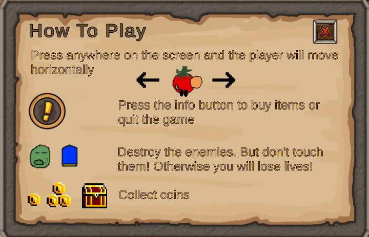
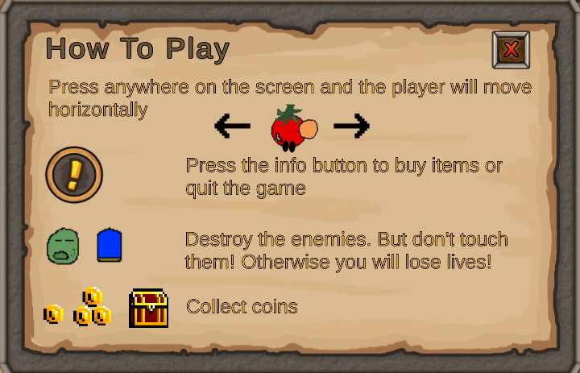
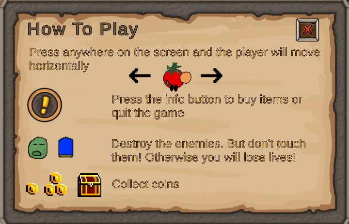

First Android Game - Part 3 - Career Fair and TestersJune 15, 2023This is part 3 of making my first Android Game. If you missed part2, you can find it hereIt was time to get some ALPHA testers! I happened to be layed off and there was a career fair happening held by DigiBC. So I thought this was a good way to showcase my android experience with this game and have them test. The best part was they would only play for 15 seconds to 1 minute. By watching the recruiters play, I can learn what I need to improve on1) No one knew what to do with their fingers. They didn't know the player could be moved. Even when I tell them the player follows the finger, they initially thought the player will go anywhere, but it is only on the x axis. Therefore I need to consider including a tutorial or some sort of arrow indication.2) They had no clue there was a weapon selection button. I need to notify the user at the beginning3) No one knew that after clicking a weapon button, then clicking the select button, they needed to select the "x" button to close the window. They all assumed the "select" button was the close button. I should change it so the "select" button is the close button.4)Some users didn't know what to collect or dodge. They weren't sure if the coins were to be collected or not. I probably need a tutorialTo resolve the select button not closing on the what you have to buy menu. I made the select button do what the close button does in addition to what the select button already does. So now when the user selects a weapon then clicks the "select" button, the menu closes and the game continuesTo resolve user not knowing what to collect, dodge or when to press the select button. I added a how to play button and how to play menu in the Start scene

This is it for part 3. Part 4 can be found hereRecent blogsSee all blogs
 4)Some users didn't know what to collect or dodge. They weren't sure if the coins were to be collected or not. I probably need a tutorial
4)Some users didn't know what to collect or dodge. They weren't sure if the coins were to be collected or not. I probably need a tutorial
 To resolve the select button not closing on the what you have to buy menu. I made the select button do what the close button does in addition to what the select button already does. So now when the user selects a weapon then clicks the "select" button, the menu closes and the game continues
To resolve the select button not closing on the what you have to buy menu. I made the select button do what the close button does in addition to what the select button already does. So now when the user selects a weapon then clicks the "select" button, the menu closes and the game continues
 To resolve user not knowing what to collect, dodge or when to press the select button. I added a how to play button and how to play menu in the Start scene

This is it for part 3. Part 4 can be found here
To resolve user not knowing what to collect, dodge or when to press the select button. I added a how to play button and how to play menu in the Start scene

This is it for part 3. Part 4 can be found here